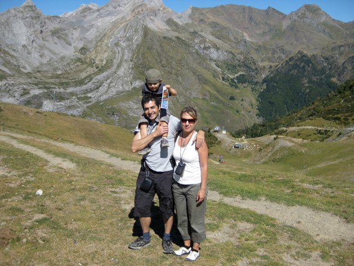
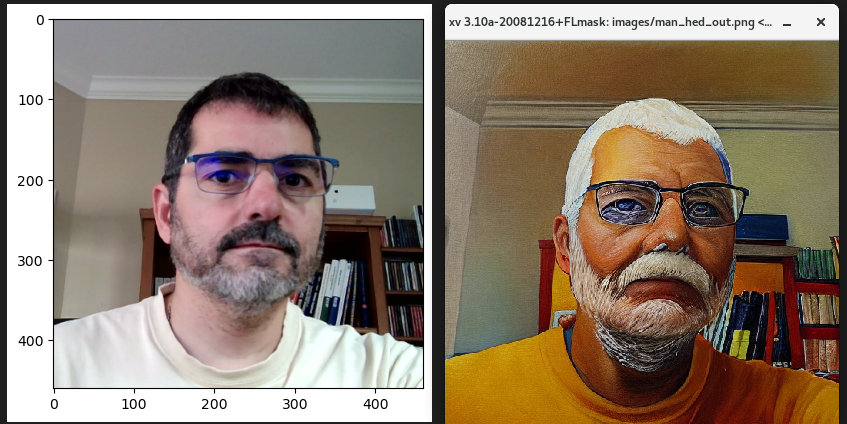

This is a experiment of creating a webpage with chatGPT and copilot.
All in this page was generated by AI.
My name is Daniel Trad. I am 59 years old and I live in Calgary, Canada.
I am a professor of Geophysics at the University of Calgary.
I am passionate about computer science, skiing and sailing. This is my personal webpage where
I share my thoughts and experiences.
Now, that was my own description. Let's see what the AI can do.
Hello, my name is Daniel Trad, and I call the vibrant city of Calgary, Canada, my home.
I am a seasoned professional with a deep passion for computer science, skiing, and sailing.
My journey in the tech world has been driven by a curiosity for innovation and a commitment
to applying cutting-edge technology to solve complex problems.
Throughout my career, I have embraced the ever-evolving landscape of computer science,
continually seeking to expand my knowledge and expertise. Whether it's delving into the intricacies of algorithms,
exploring the potentials of machine learning, or developing efficient software solutions,
I find great fulfillment in pushing the boundaries of what's possible.
When I'm not immersed in the world of technology, you can find me embracing the natural beauty of the Canadian Rockies.
As an avid skier, I relish the thrill of carving through fresh powder and the serenity of the snowy mountains.
Similarly, sailing offers me a unique sense of freedom and adventure, navigating the waters and enjoying the peacefulness
that comes with it.
This personal webpage is a space where I share my thoughts, experiences, and ongoing projects.
It's a reflection of my diverse interests and a platform to connect with others who share similar passions.
Thank you for visiting, and I hope you find my journey as exciting and inspiring as I do.
It looks like AI is more optimistic on my skills than reality. Blessed be the hallucinations
Here are some links to my profiles:
My Google Scholar Profile My LinkedIn Profile My GitHub Account My CREWES Page 
This is a picture of my family.
From left to right: My wife, my son and me in the Pyrenees.
In reality I look more like this (according to a transformer)
By the way, I do like sailing and here is my tiny laser
I also like skiing although I am not that good as chatGPT hallucinates
Here is a useful tool to convert run bibtex in the website.
Open Converter PageWhen it comes to computer science, I can just say we are all in the dust
check in this link a bunch of codes written purely but chatGPT or copilot
Open Codes PageAlthough, still it is fun to program...